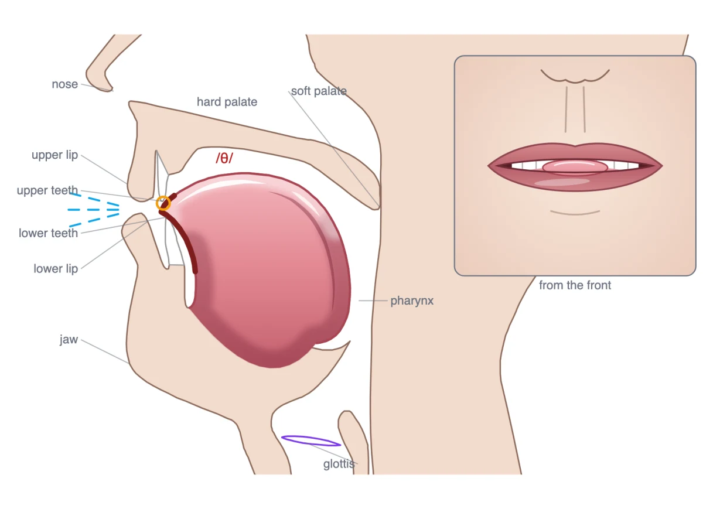
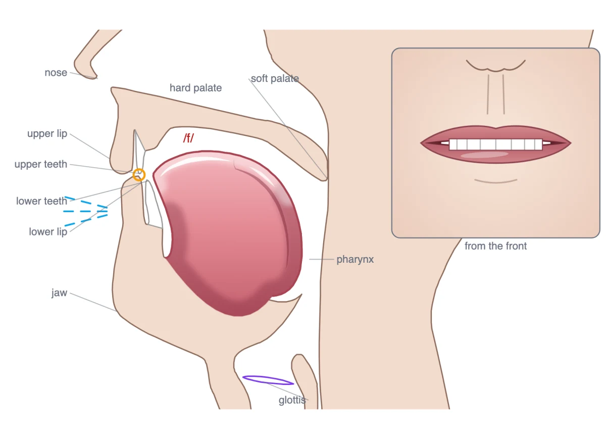

Research prototype · Speech & Audio · 2026
MIMIC-Sound
Teaching people to make any sound.
- Sing in a voice you choose
- Speak dozens of languages with a native accent
A human voice has to come out of a human vocal tract.
One skill behind it all: shaping the vocal tract
Tongue, lips, jaw, soft palate, larynx.
- Speak a new language as if it were your own
- Finally say the r you never could
- Imitate a whip crack, a cat, or Morgan Freeman
- Keep a high note supported
Today's tools say a sound was wrong. MIMIC-Sound shows how to fix it.
- Measures what your vocal tract did, from audio alone
- Shows the move that reaches the target
- Plays it, so you hear what the move changes
The difference is the instruction
A learner is asked for the th in think; what came out was an /f/. Instead of a score, the prototype shows both mouths and what has to move.


How it works
A working prototype, running in the browser. The learner says a word; five steps run end to end.
- Hearwhich sound came out?
A neural phone recognizer (wav2vec 2.0) transcribes the take sound by sound and scores each one.
- Measurewhat did the mouth do?
Articulatory inversion (SPARC) estimates where the tongue, jaw and lips were, 50 times a second, from the audio alone.
- Explainwhat should change?
Target and attempt are compared feature by feature, and the gap becomes a plain instruction built from sounds the learner already has.
- Show & playsee it, hear it
An animated head shows the move; a physical vocal-tract synthesizer plays any tongue and lip setting, so a small move is heard.
- Try againpractise
Live practice from the microphone, single words in depth, and consonants as movements.
One foundation, starting with pronunciation
Pronunciation, speech therapy, singing and imitation all meet at the same point: knowing what to do with the vocal tract to make a target sound. The prototype starts with the most widespread need: Turkish speakers learning English.
Project
- Role
- Conceived the project; designed and built the prototype.
- Next
- Extended as a five-person senior project in Computer Engineering at METU, advised by Prof. Sinan Kalkan: a benchmark labeled by human listeners, a feedback model that learns which instructions help, the target played in the learner's own voice, and a learner study.
- Status
- Working prototype, tried by a handful of people; not yet evaluated in a learner study.